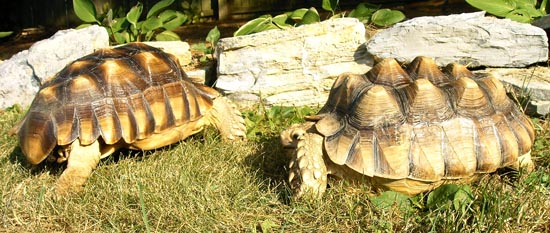

|
PIRAMIDISMO
EN TORTUGAS TERRESTRES: POSIBLES CAUSAS
Marcos
Martínez, 2006
Uno de los
problemas más frecuentemente encontrado en el mantenimiento de
tortugas terrestres en cautividad es el crecimiento de las placas del
caparazón con forma cónica, comúnmente conocido como piramidismo.
Se han señalado varios aspectos como causantes, principalmente
aquellos relacionados con la dieta, aunque recientemente se da mucha
importancia a las variables ambientales, especialmente a la humedad.
Muchos criadores consideran la ausencia de piramidismo como uno de los mejores indicadores de la
calidad de mantenimiento de los animales.
Piramidismo es el término
general usado para describir el crecimiento anormal del caparazón de
las tortugas y particularmente el crecimiento individual de las
placas en dirección vertical (Tabaka y Senneke, 2004), formando así
una estructura que recuerda a una pirámide. Este fenómeno suele ir
acompañado de una excesiva solidificación de queratina y un infra-crecimiento de la masa ósea
subyacente. (Highfield,
2000b). En el crecimiento normal, cada placa crece aumentando su
diámetro de forma casi totalmente horizontal.
Piramidismo en Geochelone sulcata, (Jesse
Rothacker,
Forgottenfriend).
Por desgracia,
es un concepto demasiado amplio, usado para nombrar a varias
malformaciones del caparazón. El piramidismo está ligado en muchas
ocasiones a enfermedades óseas como la osteodistrofia o enfermedad
ósea metabólica (EOM). Highfield (2000c) clasifica estos casos en dos
grandes grupos:
• Por un lado tendríamos a los animales que han sido
alimentados con una dieta deficiente en todos los sentidos: calcio,
vitaminas y minerales. Un ejemplo serían tortugas alimentadas a
base de lechuga y tomate (jitomate) sin ningún tipo de suplemento. Esas carencias
se manifestarían en forma de plastrón y espaldar blandos, con un
crecimiento cónico de las placas relativo, pero no muy acusado. La
zona pélvica del espaldar estaría hundida y, en algunos casos, la
mandíbula está también afectada. El grosor de la capa de queratina y los niveles de urea son normales. El crecimiento no es
acelerado, sino más bien ralentizado. En estos casos un aumento de la
ingesta de calcio y la exposición a rayos UVB y/o vitamina D3 suele
solucionar el problema, a veces incluso, cuando la dieta es
bastante pobre.
•
El segundo grupo incluiría todo tipo de
deformaciones derivadas de una alta ingesta de proteínas con el
consecuente rápido crecimiento. La causa básica es muy similar al grupo
anterior, ya que el crecimiento acelerado demanda mucho más
calcio y minerales de los que la tortuga puede metabolizar,
produciendo
de esta forma un desarrollo óseo desequilibrado. Como consecuencia el
tejido óseo es poroso, fibroso y grueso. La ingesta de exceso de
proteína inhibe ya de por sí la asimilación de calcio; aumenta el
crecimiento de la queratina, y esto además de hacer crecer las uñas y
el pico de forma desmesurada, se manifiesta en la capa externa del caparazón. Cuando el crecimiento de la
queratina excede al crecimiento óseo, se produce una presión que
crea distorsión en las placas produciendo patrones de crecimiento anormales.
Estos animales suelen tener un aspecto melánico. Esta coloración
oscura les provoca problemas termorregulatorios, con las consecuencias que ello implica en
cuestiones de eficiencia digestiva, comportamiento y patrones de
actividad.
|
Juvenil de Gopherus berlandieri
alimentado en una dieta deficiente (Aída Rodríguez). |
Testudo graeca
adulta alimentada con una dieta alta en proteína (Luís Saura). |
Convendría
volver a puntualizar que casi todos los casos de
osteodistrofia nutricional
o enfermedad ósea metabólica (EOM) y otras malformaciones graves van casi
invariablemente ligadas a un mayor o menor aspecto piramidal de las
placas del caparazón, aunque eso no signifique que todos los animales
con este aspecto sufran esta
u otra enfermedad. Un
claro indicador de osteodistrofia sería el hundimiento de la
zona vertebral o de la parte trasera, las placas marginales levantadas
(Nash, 2005) o cualquier otro tipo de crecimiento de aspecto
desproporcionado, aunque la única forma fiable de saberlo sea haciendo
un estudio histológico del tejido óseo.
El piramidismo en sí
mismo puede llegar a ser problemático en algunos casos,
provocando alteraciones de locomoción por el grosor excesivo del plastrón
o por el peso añadido que supone a la masa corporal, además de dificultar el apareamiento y la locomoción en general.
Otro caso muy
distinto es el de especies como
Geochelone Elegans o el género Psammobates, donde el
crecimiento piramidal de las placas del espaldar es totalmente
normal en animales silvestres y no implica ninguna deficiencia
nutricional ni desajuste ambiental. En estos casos el crecimiento de
la masa ósea si se hace un estudio histológico es totalmente natural (Highfield,
sin publicar). Geochelone Elegans presenta esta característica
de un modo heterogéneo, pues se encuentran animales totalmente lisos y
otros fuertemente marcados por este carácter dentro de las mismas
poblaciones. Tradicionalmente se ha dicho que los ejemplares de Sri
Lanka poseen claramente este distintivo y que los continentales no,
aunque esto no parece cierto, puesto que existen animales totalmente
lisos en Sri Lanka (De Silva, 2003) y muy piramidales en el rango de
distribución Noreste de la especie (Pakistán) (Edqvist, 2002?).
|
Geochelone
elegans de Pakistán (Fernando Pérez). |
G. elegans del
sur de la India (Fernando Pérez). |
Obviando los
críticos y claros ejemplos anteriormente mencionados, es muy común
encontrar animales que, mantenidos en condiciones aparentemente
favorables en todos los aspectos (incluyendo dietas detalladamente
estudiadas y supuestas condiciones ambientales apropiadas) muestran un
ligero crecimiento de las placas con forma de pirámide, aunque menos
marcada y generalmente más evidente en las placas vertebrales. Estos
animales suelen tener un aspecto externo proporcionado, gozan
de salud, y se reproducen con normalidad. Aún suponiendo que éstos no
presenten problemas de salud, los criadores de tortugas intentan que
sus animales crezcan con las mismas formas y proporciones que los especímenes silvestres. Conforme se ha ido avanzando en el
mantenimiento de tortugas terrestres en cautividad los problemas
generales de malformación en el crecimiento del caparazón se han ido
previniendo, pero en algunos casos, el problema persiste, principalmente en especies como Testudo kleinmanni,
Geochelone pardalis o Geochelone sulcata.
|
Testudo graeca nacida en
cautividad de 11 años, con ligero piramidismo. Se reproduce con
normalidad (Marcos Martínez). |
G.pardalis alimentada con dieta
baja en proteína y alta en fibra con ligero piramidismo (Aída
Rodríguez). |
El piramidismo
no puede ser revertido de ninguna forma, aunque en animales jóvenes se
pude disimular si el crecimiento posterior sigue una dinámica más
“natural” (Fife, 2005). El momento más crítico son los primeros 2-3
años, donde el crecimiento es más acelerado y es más difícil de
controlar ya que en esa etapa la eficiencia digestiva puede llegar
a ser entre 4-6 veces más alta que en animales adultos (Highfield,
1996).
Varias son las
causas a las que se atribuye el piramidismo:
1. Exceso de
proteína en la dieta.
El exceso de
proteína (vegetal o animal) ha sido ampliamente documentado como
principal causa de muchas de las malformaciones del caparazón
(Merchán Fornelino & Martínez Silvestre, 1999).
Aumenta la formación de queratina, inhibe la absorción del calcio,
acelera el crecimiento desproporcionado por lo que incrementa la demanda
de calcio, y es causa principal de muchos de los problemas renales y
hepáticos sufridos por los quelonios terrestres. A su vez, el mal
funcionamiento del hígado y el riñón afecta a la síntesis de la
vitamina D3, cuya función veremos más adelante.
Con dietas altas en
proteína el desarrollo de la queratina es de un 150% (como mínimo)
respecto al de dietas
mas “naturales”, fenómeno que va acompañado a un crecimiento óseo
poroso y fibroso (osteodistrofia porosa) (Highfield, sin publicar).

Crecimiento anormal de G.sulcata
debido a la alta ingesta de proteínas comparado con ejemplar criado a
base de hierbas y césped (Jesse
Rothacker, www.forgottenfriend.org).
Highfield (sin
publicar) experimentó con crías de Geochelone pardalis durante
6 meses y comprobó un crecimiento claramente más suave y proporcionado
en animales alimentados con porcentajes bajos de proteína y
cantidades limitadas que aquellos alimentados con mucha proteína y en
cantidades también limitadas.
Hay casos
documentados (Highfield, sin publicar) de poblaciones de Testudo
graeca en el sur de Marruecos que habitan junto a plantaciones de
judías, tomate y alfalfa, que presentan crecimiento piramidal
evidente en condiciones naturales para la especie.
Dentro de este
punto habría que incluir los casos de sobrealimentación con dietas
equilibradas, fenómeno bastante habitual en cautividad
(Merchán Fornelino & Martínez Silvestre, 1999). Aunque la
proporción de proteína sea baja, parece lógico pensar que si se ofrece
a los animales grandes cantidades de comida, el resultado final es una
alta ingesta proteica (Highfield, 2000c).
Para tortugas
mediterráneas, la cantidad de proteína que no genera un desarrollo de
la queratina excesiva se sitúa en torno al 4% (Highfield, 2000b).
Un tema
controvertido en relación a la cantidad de proteína en
la dieta, es la forma de cuantificarla. En materia seca, la proporción
de proteína siempre será mayor que sobre material vegetal fresco, que
contiene agua. Una hoja fresca de diente de león tendrá un 2.7% de
proteína, mientras que en estado seco contiene 18.7% (Fife, 2005).
|
Caso extremo de G.sulcata
alimentada a base de pienso para perros, judías verdes, lechuga y
fruta (Darrel Senneke,
WCT). |
Testudo graeca alimentada con mucha
proteína animal. Nótese el hundimiento de la parte trasera del
espaldar (Luís Saura). |
2. Ciclos
anuales de disponibilidad de alimento.
Muchas especies
de tortugas, incluso algunas que viven en climas tropicales húmedos,
están sujetas a constantes ciclos de actividad/inactividad y
disponibilidad/ausencia de alimento. La mayoría de especies de climas
templados como los géneros Testudo y Gopherus pasan por
periodos de hibernación y/o estivación. Como resultado se alimentan
durante 3-8 meses al año frente a los 7-9 meses que lo hacen en
cautividad (suponiendo que hibernen), especialmente por la casi total
ausencia de estivación que estas últimas tienen. La estivación es un
fenómeno que suele estar inducido en la naturaleza por la falta de
alimento y secundariamente y a diferencia de la hibernación, por
la alta temperatura ambiente. Un caso
especialmente extremo serían algunas poblaciones de Agrionemys
horsfieldii que solamente están activas durante 3 meses en
primavera, enlazando así el letargo estival con la hibernación (Henen
et alt. 2002).
Los ciclos de
actividad no son sólo una característica exclusiva de las especies de
climas templados. En Madagascar, Pyxis aracnoides pasa por
periodos de sequía, lo que la obliga a estivar. Otras, como
Geochelone pardalis y Geochelone sulcata viven en áreas con
periodos de extrema aridez, en el caso de la segunda, con el añadido
de temperaturas extremas, obligándola a pasar semanas enteras en
galerías construidas para la ocasión. En ambos casos, hay marcados
periodos en los que la alimentación es prácticamente nula.
Macho joven de T.graeca en la Sierra
de la Almenara, Murcia. Esta población estiva e hiberna
invariablemente (Marcos Martínez).
Hay quien sugiere
que la no hibernación de las crías el primer año, práctica habitual en
cautividad, es causa directa de piramidismo, ya que en estos casos
siempre hay sobrealimentación, debido a la provisión de nutrientes
extra del saco vitelino (Soler
Massana & Martínez Silvetre, 2005).
3. Calcio y
otros minerales.
Las carencias
cálcicas, minerales o de elementos traza, como el manganeso, magnesio
y
selenio, ya sean absolutas o relativas, están implicadas, directa o
indirectamente en todas las malformaciones del caparazón de las
tortugas terrestres.
En primer lugar
están las deficiencias de calcio en sí mismas. Por todos es conocido
la necesidad que tienen las tortugas de ingerir proporciones de calcio
mucho más altas que de fósforo, siendo la proporción 5:1 el objetivo
ideal a alcanzar (Highfield, 2000c) y no 2:1 como se suele encontrar
en algunas publicaciones. En la naturaleza las tortugas consumen
alimentos con ratios muy favorables en calcio como Gopherus agassizi,
cuya dieta tiene una media de 6.4:1 (Caporaso,
1989). Es
recomendable eliminar de la dieta alimentos negativos en el ratio
calcio/fósforo y suplementar con complejos cálcicos aquellos
alimentos con ratio neutro o positivo (Highfield, 2000a). No se
debe abusar de la suplementación de calcio, puesto que se pueden provocar
problemas renales (Liesegang et alt, 2001), (Fledelius et alt, 2005).
Tampoco es aconsejable usar complementos cálcicos que contengan fósforo añadido (Highfield,
2002b), que
aunque es un componente necesario, se encuentra en todos
alimentos vegetales, por lo que no necesita ser reforzado.
En segundo
lugar, hay que prestar especial atención a la falta de radiación
ultravioleta B (UVB), que es la única fuente de la producción de vitamina D3 en las especies
totalmente herbívoras, responsable de la absorción del calcio.
Existen complementos vitamínicos con Vitamina D3, a los que se puede
recurrir en instalaciones de interior, donde los requerimientos de
radiación UVB no se alcanzan con tanta seguridad (Highfield, 1999), aunque siempre con
moderación si queremos evitar problema de hipervitaminosis (Highfield,
1996). Los complementos líquidos basados en D3, son especialmente
peligrosos en este sentido.
|
G.radiata
alimentada con dieta inapropiada y sin exposición a rayos UV.
murió a los 6 años de edad (Chris Tabaka,
WCT). |
G.Pardalis
alimentada con una dieta alta en oxalatos. Además de la depresión
vertebral, el plastrón era muy grueso y pesado. (Darrel Senneke,
WCT). |
Por último,
algunos alimentos contienen antinutrientes que dificultan la absorción
del calcio, como el ácido oxálico
(bledo, hoja de remolacha o betabel, espinaca, perejil, verdolaga, y acelga,
berro, vinagrillo), o el ácido fítico (guisantes o chícaros, perejil,
judías o ejotes, hojas de remolacha o betabel, acelgas), que impide la absorción
de algunos minerales. El exceso de
proteína también inhibe la absorción de calcio. (Highfield, 2000d).
En el mismo
experimento anteriormente mencionado de Highfield (sin publicar)
algunos de los animales fueron alojados con tubos UVB, calcio y
vitamina D3 oral sin problemas aparentes. Otro grupo fue alojado en
las mismas condiciones, pero sin vitamina D3, evidenciado problemas
rápidamente (quizás por la mala calidad de los tubos usados).
4. Fibra.
Es un importante
componente de la dieta de la mayoría de tortugas terrestres,
especialmente en especies desérticas y semidesérticas. Su déficit
traería como consecuencia, dentro del contexto del piramidismo,
un efecto similar al de la sobrealimentación, ya que hace a los alimentos
fácilmente digestibles (Baer et al., 1997). Un ejemplo claro sería la alfalfa
madura, que a pesar
de su contenido en proteína relativamente alto, resulta ser un
alimento ideal en la práctica, al parecer por su alto contenido en
fibra (Senneke, 2004), (Highfield, 1999)
5. Actividad
Física.
Está demostrado
en estudios humanos que la actividad física repercute positivamente en
la fijación del calcio en el tejido óseo. Esto invita a pensar en un
efecto similar en el caso de las tortugas (Senneke, 2004).
El ejercicio físico incrementa la necesidad de proteína y mejora el
depósito de calcio en los huesos (Heinen, 2005). De hecho, en la
naturaleza, los animales suelen realizar mucho ejercicio físico para
buscar comida o apareamiento; a veces esto no es posible de replicar en
cautividad.
Juvenil de Gopherus berlandieri particularmente activo comparado con sus
congéneres (Aída Rodríguez).
6. Genética.
Otro de los
factores sobre los que se ha especulado como causa del piramidismo es
la genética intraespecífica de cada individuo. Un caso común que ha
servido para hacer hipótesis sobre este asunto es el ejemplo de
instalaciones que acogen a varias crías/juveniles bajo idénticas
condiciones, obteniéndose animales más piramidales que
otros. Aunque supongamos que las condiciones son idénticas, en este tipo
de instalaciones se dan comportamientos de competitividad
por el alimento, el refugio, las zonas de asoleamiento, etc., que hacen
que no todos ingieran las mismas cantidades de nutrientes, se asoleen
el mismo tiempo o se escondan en los mismos refugios. Además, las
poblaciones naturales de
estos mismos animales en estado silvestre, tienen caparazones
totalmente lisos de forma homogénea, con lo que la teoría de la genética individual
podría descartarse por completo. Otro caso muy distinto, y que no ha
sido estudiado con profundidad son las especies ya mencionadas, que
desarrollan piramidismo de forma natural y heterogénea. En estos
ejemplos, las causas de las marcadas diferencias individuales están
todavía por determinar, por lo cual no se sabe si son factores
genéticos, nutricionales y/o ambientales los que desencadenan este
proceso. De cualquier modo, poco o nada tienen que ver con el resto de
especies que no presentan esta característica en su estado
silvestre.
Geochelone chilensis con piramidismo
(Ginés Rubio).
7. Condiciones
ambientales (humedad e hidratación)
Recientemente se
ha apuntado a la humedad ambiental y/o al estado de hidratación de los
animales como uno de los causantes del crecimiento piramidal de las
placas.
Wiesner e Iben
(2003) realizaron un experimento en el que sometieron a 50 neonatos de
Geochelone sulcata a varias dietas y condiciones de humedad
ambiental. Se determinaron tres dietas con contenidos proteicos
distintos, mientras que cinco fueron los niveles de humedad relativa
establecidos. Los niveles de piramidismo fueron evaluados
cuidadosamente, midiendo los ángulos de las suturas entre placas, sin
influir su tamaño. Se observó que entre los animales mantenidos en
ambientes secos hubo un crecimiento más piramidal en los alimentados
con más proteína, aunque las diferencias eran mínimas. Los animales
alojados en condiciones de humedad alta no mostraron diferencia en
cuanto a piramidismo se refiere, cualquiera que fuera la ingesta
proteica, aunque este último factor si afectó al tamaño.
Las conclusiones
de este experimento fueron que el ambiente seco, junto con altos
ratios de crecimiento, llevan inevitablemente al piramidismo, y que
las proporciones de proteína son un factor cuestionable para su
desarrollo. La explicación podría estar en que las tortugas
experimentan crecimiento en temporadas de gran disponibilidad de
alimento en cantidad y calidad, coincidiendo con condiciones de
alta humedad ambiente relativa. En épocas de sequía, debido a la carencia
de alimento, tienen que recurrir a material seco, más alto en fibra, y
con menor valor nutricional, y por tanto se ralentiza el crecimiento.
Durante estas temporadas muchas especies pasan la mayor parte del
tiempo inactivas escondidas en refugios con una humedad ambiente mucho
mayor que la del exterior. Fisiológicamente hablando, la
deshidratación reduce la presión inter/intracelular en el tejido
blando de la sutura entre las placas del caparazón. Si las tortugas
mantienen el estado de deshidratación durante periodos prolongados,
estas suturas “dobladas” se fijan permanentemente y con el paso del
tiempo, esta tendencia continuada hace que las estructuras cónicas se
hagan más notorias. Los autores también apuntan que esta hipótesis
necesita de más investigación, y que la asimilación del calcio y del
fósforo puede estar directamente relacionada, aunque los análisis de
sangre que acompañaron a su estudio no revelaron nada significativo en
este sentido.
Richard Fife
(2005) llegó a las mismas conclusiones con Geochelone carbonaria.
Las tortugas mantenidas en ambientes más húmedos desarrollaron
capazones lisos e indistinguibles de los ejemplares silvestres,
mientras los que habían sido criados en ambientes secos desarrollaban
signos típicos de piramidismo en pocos meses. Este autor ha aplicado
con éxito estos métodos a diferentes especies por medio del uso de
refugios húmedos.
Geochelone sulcata (Richard Fife,
Riparian Farms).
Geochelone Pardalis (Richard Fife,
Riparian Farms).
Ambas tortugas fueron criadas en
contenedores de plástico con refugios húmedos con musgo. Temperaturas
nocturnas de 26-27ºC y diurnas de 30-31ºC. Tenían lámparas de UV, pero
muy viejas, por lo que es probable que no emitieran UVB. Fueron
alimentadas con dieta Mazuri©, que contiene vitaminas y minerales, D3
incluida. También fueron alimentadas con hierbas silvestres como una
parte pequeña de su dieta. La humedad en sus refugios fue del 60%.
Senneke (2004)
menciona otro experimento similar llevado a cabo por un veterinario en
Sudamérica que alimentó a un grupo de 20 crías de Geochelone
carbonaria con una dieta muy alta en proteínas (pienso para
peces), al mismo tiempo que eran mantenidas en un recinto
literalmente encharcado, obteniendo como resultado un crecimiento
absolutamente liso.
En Homopus
signatus (Loerh, sin publicar) se comprobó que una ligera
pulverización diaria del substrato y los refugios produjeron un cambio
drástico hacia un crecimiento natural y totalmente liso.
Recientemente,
se descubrió en una isla del Caribe con ambientes extremadamente
áridos, una población introducida de Geochelone carbonaria que
presentaba claros signos de piramidismo, homogéneamente presentes en
todos los individuos (Senneke, 2004).
Muchas son las
alternativas que hay para ofrecer microclimas húmedos a las tortugas
terrestres, como por ejemplo el uso de esponjas mojadas sobre refugios
de teja, recipientes de plástico regularmente humedecidos e incluso
sistemas electrónicos de humidificación aplicados a cualquiera de los
ejemplos anteriores. En algunos casos, donde el substrato es
importante para recrear microclimas húmedos sin alimentar la
proliferación de bacterias, moho u hongos, el uso de musgo ha
resultado ser muy efectivo, ya que es un material relativamente
barato, no tiende a enmohecerse, y no parece ser tóxico si es ingerido
(Fife, 2005).
Demasiadas
coincidencias para no valorar la carencia de humedad/hidratación como
un importante factor desencadenante del piramidismo. Sin embargo,
algunos criadores/aficionados, principalmente de los Estados Unidos,
han tomado esa regla “demasiado” literalmente y confían plenamente en
este elemento como “factor corrector” del piramidismo, de modo que
alimentan a sus animales con una gran cantidad de piensos comerciales,
muy altos en proteína, a la vez que mantienen elevados niveles de
humedad y temperatura. De esta forma, se busca un equilibrio entre el
acelerado crecimiento que esto provoca y la asimilación de proteínas,
calcio y otros minerales por parte del riñón y el hígado. Aunque los
resultados que obtienen son “externamente” muy buenos, no informan del
estado hepático-renal de dichos animales, que se ven forzados a
metabolizar cantidades de proteína, calcio y minerales muy superiores
a las que experimentarían en la naturaleza, y bajo las cuales han
evolucionado a lo largo de millones de años. Tampoco dan cuenta del
crecimiento óseo interno, para lo cual necesitarían de un estudio
histológico, para determinar la densidad ósea (Highfield, 2000c).
Testudo Kleinmanni de 3 años de edad
alimentada con vegetales y pienso Mazuri© (Ed Pirog).
Pyxis Arachnoides alimentada con una
dieta similar (Ed Pirog).
Geochele Pardalis alimentada
parcialmente con pienso Mazuri, no recibe radiación UV.
La única fuente de
vitamina D3 proviene de la suplementación propia del pienso. En los 3
ejemplos, los animales fueron expuestos a ambientes de humedad alta en
gran parte de sus recintos (Ed Pirog).
Algunos autores
critican este tipo de prácticas. Aún reconociendo que la dieta y las
condiciones ambientales son aspectos inseparables y que los
microclimas son importantes para la fisiología de las tortugas
terrestres (Highfield, 2002a), la causa mayor del desarrollo poroso óseo está en la
ingesta de proteína (Highfield, 2000c). Este mismo autor admite que el
estado hídrico de los animales, ya sea, a causa de la humedad
relativa, de los microclimas o de baños frecuentes, es importante para
la salud de los animales, y que en exceso pueden ayudar a los riñones
a metabolizar más calcio y así satisfacer la alta demanda que las
dietas ricas en proteína provocarían. Sin embargo reniegan totalmente
de la idoneidad de ese tipo de dietas, por los ya comentados problemas
hepáticos, renales y óseos. Las altas temperaturas aumentan la
eficiencia digestiva y aceleran la digestión, aumentando la demanda de
alimento y el crecimiento, con un alto coste sobre el sistema renal,
ya que genera más urea. (Highfield, 2000c)
En estudios
realizados con Geochelone nigra, (Furrer et al., 2004) no se
consiguió imitar el crecimiento ralentizado y completamente liso de
los ejemplares silvestres, aún manteniendo niveles de humedad e
hidratación altos. Sin embargo, sí se constató un cambio notable cuando se
redujo drásticamente la ingesta proteica.
Las dietas
basadas en piensos comerciales presentan muchos más problemas además
de los ya conocidos por su alto contenido proteico. Este tipo de
piensos suelen estar elaborados a partir de subproductos de soja y
cereales. Son compuestos altos en ácidos grasos omega 6, que provocan
descalcificación ósea, y fitatos, que neutralizan el calcio y otros
minerales. Además, los cereales alteran el metabolismo de la Vitamina
D3 (Heinen, 2005).
Los porcentajes
de proteína en la dieta, las condiciones ambientales y la síntesis de
vitamina D3, son varios aspectos de la biología de las tortugas
terrestres que van inevitablemente ligados entre sí. Las especies que
viven en climas áridos o semiáridos son uricotélicas, es decir,
eliminan los subproductos provenientes de la metabolización de las
proteínas por medio de ácido úrico (en forma de uratos). Ésta es una
estrategia que necesita de menos recursos hídricos, algo fundamental
en las condiciones en las que viven. Estas especies son a su vez, casi
totalmente herbívoras, tienen a la radiación UV-B, como
único recurso para la síntesis de la vitamina D3, responsable de la
absorción del calcio. Las especies que habitan climas más húmedos
tienden a ser más amoniotélicas y/o ureotélicas, mecanismos que
necesitan de más cantidad de agua. Al mismo tiempo, y no por
casualidad, estas especies suelen incluir en sus dietas elementos con
más proteína animal, la cual digieren con mayor facilidad. En sus
dietas hay elementos que suelen contener vitamina D3, por lo que la dependencia
sobre las radiaciones solares es menor (Highfield, sin publicar).
•
Conclusiones
Resumiendo, parece razonable pues, pensar en
el piramidismo como un proceso multifactorial relacionado con el
déficit y/o exceso de varios factores que causan la no correcta
asimilación/formación de los componentes que constituyen el caparazón
de las tortugas y en el que todos o parte de los elementos enumerados
juegan un papel importante en mayor o menor grado, dependiendo de la
especie. Un ejemplo claro lo forman dos especies del mismo género como
Testudo marginata y Testudo kleinmanni . La primera es
bastante fácil de criar con crecimiento “liso”, mientras que la
segunda es todo lo contrario.
Pese a su dificultad, es posible
criar Testudo Kleinmanni con un aspecto casi indistinguible de los
ejemplares silvestres (Fernando Pérez).
BIBLIOGRAFÍA
Baer, D.J.,
Oftedal O.T., Rumpler W.V, Ullrey, D.E.
(1997).
Dietary Fiber Influences Nutrient Utilization, Growth and Dry Matter
Intake of Green Iguanas (Iguana iguana). The Journal of
Nutrition, 1997 Aug;127(8):1501-7.
Caporaso, F. (1989). TNT -
Tortoise Diet Information.
Tortuga Gazette
25(7): 6-7.
De
Silva, A. (2003). The Biology and Status of the Star Tortoise
(Geochelone elegans) in Sri Lanka. 11. A.M.P. Print Shop, Gampola.
Edqvist, U. (2002?).
Star Tortoise Basics. Tortoise Trust.
Fife, R. (2005).
Pyramiding in Tortoises. Reptile Magazine, May
2005.
Fledelius B., Jorgensen G.W., Brimer L., Jensen H.E. (2005).
Influence of calcium offered to leopard tortoises. The Veterinary
Record, 156(26), June 2005, p. 831-835.
Furrer, S.C., Hatt, J.M., Snell, H, Marquez, C, Honegger, R.E. and
Rübel, A. (2004)
Comparative study on the growth of juvenile Galapagos giant
tortoises (Geochelone nigra) on the Charles Darwin Research Station
CDRS (Galapagos Islands, Ecuador) and Zoo Zurich, Swizerland. Zoo
Biology, 23, 177-183.
Heinen, J.E .(2005).
Pyramiding in Tortoises. The Sulcata and
Leopard Tortoise.
Henen
B.T., Nagy K.A., Bonnet X, Lagarde F. (2002).
Clutch Size and Fecundity of the Wild Horsfield’s (Testudo
horsfieldii) Time and Body Size Effects. Chelonii,
Vol. 3: 135-143. En: Proceedings of the International Congress on
Testudo Genus – March 7-10, 2001.
Editions SOPTOM,
Gonfaron.
Highfield, A.C. (1996). Practical Encyclopedia of Keeping and
Breeding Tortoises and Freshwater Turtles:16,
104. Carapace
Press, London.
Highfield, A.C. (1999).
High growth rate diets and vitamin D3 -
a response.
Tortoise Trust.
Highfield, A.C. (2000a). Notes on Dietary Constituents for
Herbivorous Terrestrial Chelonians and Their Effect on Growth and
Development en The Tortoise and Turtle Feeding Manual.
3-10. Carapace Press, London.
Highfield, A.C. (2000b). Notes on Skeletal and Carapace Deformity
in Captive-Bred Tortoises (Genus;Testudo) Related to Diet with
Observations on the Use of Vitamin and Mineral Supplements en
The Tortoise and Turtle Feeding Manual. 10-13. Carapace Press,
London.
Highfield, A.C. (2000c). Further Insights into the Nutritional
Requirements and Disorders of Tortoises; Protein Energy and Enviroment
en
The
Tortoise and Turtle Feeding Manual.
36-52. Carapace Press, London.
Highfield, A.C. (2000d). Anti-Nutrient Factors in Common Tortoise
Diets en The Tortoise and Turtle Feeding Manual. 33 - 35.
Carapace Press, London.
Highfield, A.C. (2002a).
Understanding
Microclimates in Captivity.
Tortoise Trust.
Highfield, A.C. (2002b).
Feeding Tortoises. A practical guide to
avoiding dietary disasters. Tortoise Trust.
Liesegang A., Hatt J.-M., Nijboer J., Forrer R., Wanner M. and
Isenbügel E. (2001)
Influence of different dietary calcium levels on the digestibility
of Ca, Mg and P in captive born juvenile Galapagos giant tortoises
(Geochelone [elephantopus] nigra).
Zoo
Biology, 20, 367-374.
Merchán
Fornelino, M. y Martínez Silvestre A. (1999). Tortugas de España.
Biología, Patología y Conservación de las Especies Ibéricas, Baleares
y Canarias: 287-288,.
Ediciones Antiquaria,
Madrid.
Morris, P. E. (2002).
Keratin & Pyramiding. Hatchling Haven.
Nash, H. (2005).
Anatomy & Diseases of the Shell.
Peteducation.com
Soler Massana J.
y Martínez Silvestre A. (2005). La Tortuga Mediterrànea a Catalunya.
103. Ediciones L’Aguila de Cultura Popular, Col-lecciò Natura, 3,
Tarragona.
Tabaka C. &
Senneke D. (2004).
Deformities, Improper Growth or "Pyramiding"?.
World Chelonian Trust
Senneke, D. (2004).
What Causes Pyramiding?. World Chelonian
Trust.
Wiesner, C. S. & Iben, C. 2003. Influence of environmental humidity
and dietary protein on pyramidal growth of carapaces in African
spurred tortoises (Geochelone sulcata). Journal of Animal
Physiology and Animal Nutrition: 87[1-2]:66-74.
Las referencias sin
publicar pueden encontrarse en los foros
Kingsnake (1999-2003),
Kingsnake (2003-2006),
y
Tortoise Trust.
|